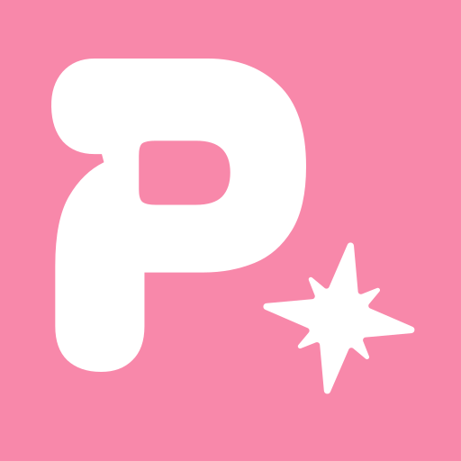

파도는 멈출 수 없어도,
타는 법은 배울 수 있다.
디자인하고, AI로 만드는 법을 배워갑니다.
Selected Apps
2026 —01

SnapLog
사진 한 장과 간단한 기록을 주제별로 모아보는 iOS 기록 앱. 흩어진 일상의 순간을 하나의 로그로 남깁니다.
02

Punchy!
사진을 도형과 글자 모양으로 펀칭하고 PNG로 저장하는 웹 도구. 완성한 이미지는 인스타그램과 굿노트 등 원하는 곳에 바로 활용할 수 있습니다.